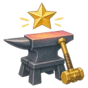

属性抽取
从3张属性强化中选择1张。根据稀有度不同，效果会是每回合属性强化1张的好几倍，并在这一局结束前一直加在所有娃娃身上。不会出现特殊强化。 价格是120颗星星，买多少次都不变。
| 属性强化 | 普通 70% | 稀有 25% | 传说 5% |
|---|---|---|---|
| 生命强化 | +12% | +24% | +48% |
| 力量强化 | +12% | +24% | +48% |
| 速度强化 | +12% | +24% | +48% |
| 防御强化 | +12 | +24 | +48 |
| 法力强化 | +12% | +24% | +48% |
| 治疗强化 | +15% | +30% | +60% |
| 移动强化 | +12% | +24% | +48% |